Nascer, viver e no Santos morrer.
Quem somos
O Portal do Peixe é um site destinado a reviver a história e trazer modernidade para um dos maiores clubes do Brasil e do Mundo, o Santos Futebol Clube. Desde 1912 o clube do Santos fez história e se tornou um dos clubes formadores do futebol brasileiro, por onde passou encantou as pessoas e ganhou diversos fãs e torcedores, entretanto, já se passaram mais de 100 anos de sua criação e o clube ainda possui tecnologias ultrapassadas o que dificultou sua conexão com a torcida, hoje, muito mais conectada às redes. Por isso, nosso objetivo é retomar a conexão com a torcida, valorizar a história do clube e trazer inovação ao seu relacionamento com os fãs.
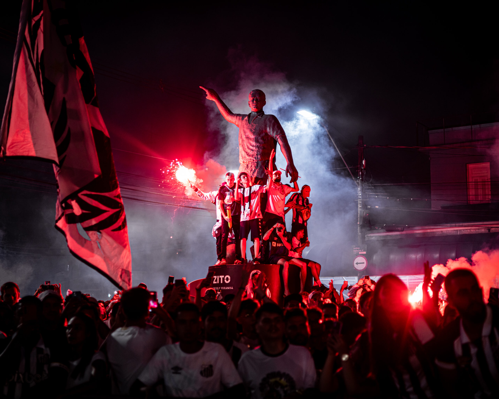
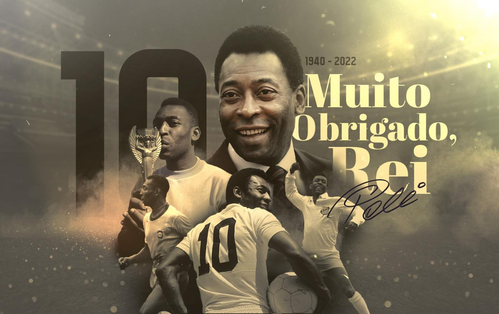
História
Com mais de 112 anos de conquistas, o Santos FC se destaca como um dos maiores clubes do mundo. Reconhecido internacionalmente por sua tradição ofensiva, revelou ao planeta gênios como Pelé e Neymar, acumulando títulos históricos, inovações táticas e uma base formadora respeitada mundialmente. Conheça mais sobre essa trajetória lendária que moldou gerações de torcedores e inspirou o futebol brasileiro.
Leia mais🏆 NOSSAS CONQUISTAS 🏆
Lendas

Pelé
O Rei do Futebol, maior artilheiro da história do Santos FC.
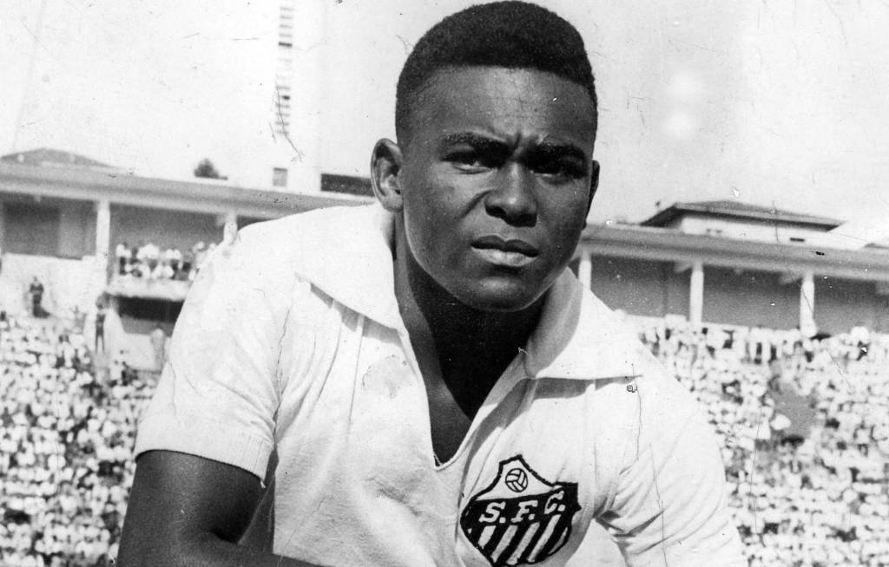
Coutinho
Parceiro inseparável de Pelé, grande goleador e símbolo do ataque santista.
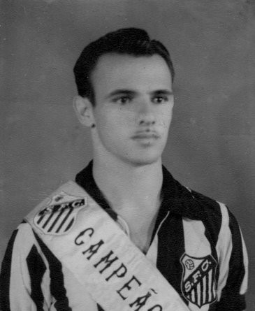
Pepe
O “Canhão da Vila”, segundo maior artilheiro da história do clube.
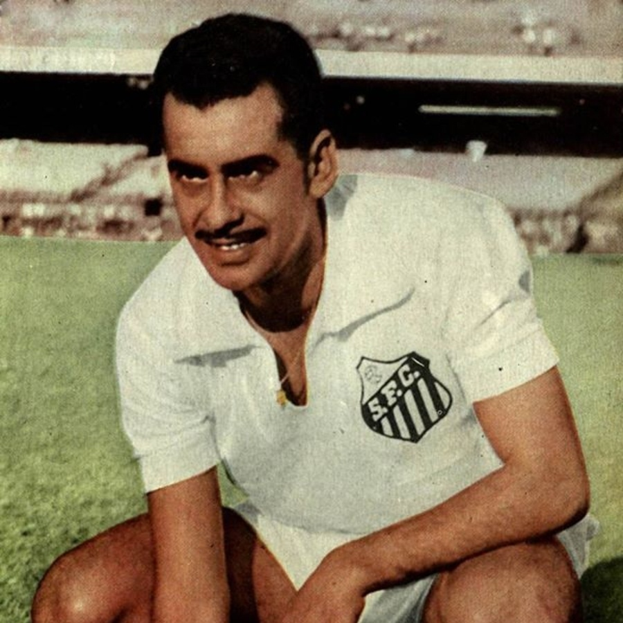
Zito
Líder nato e símbolo de raça, capitão do time nas décadas douradas.
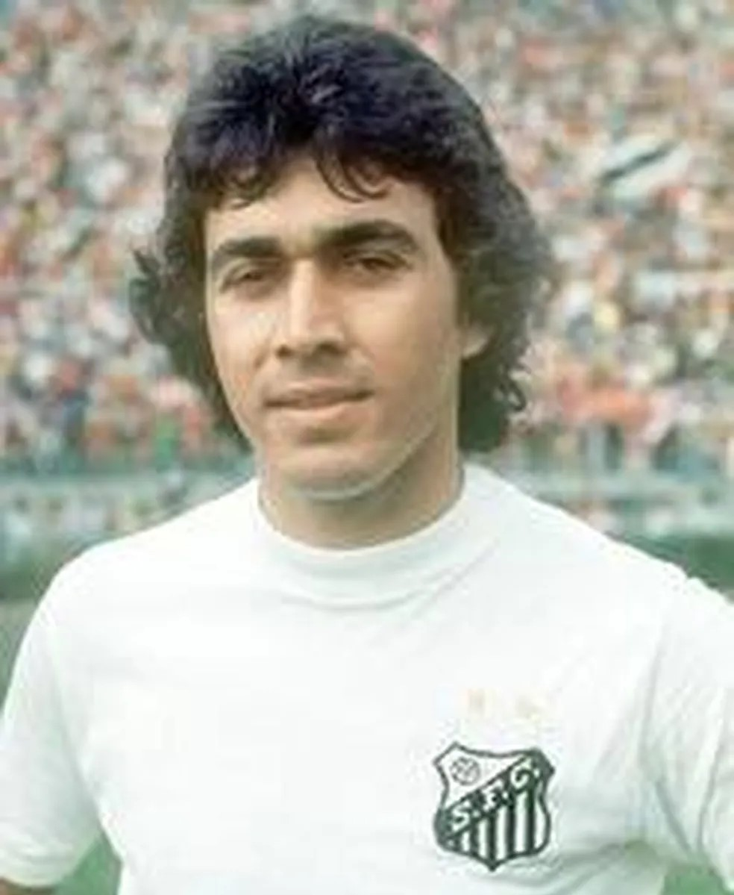
Clodoaldo
Volante elegante e técnico, campeão do mundo em 1970 e símbolo do meio-campo santista.
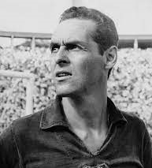
Gylmar
Goleiro lendário, multicampeão pelo Santos e pela Seleção Brasileira, sinônimo de segurança.
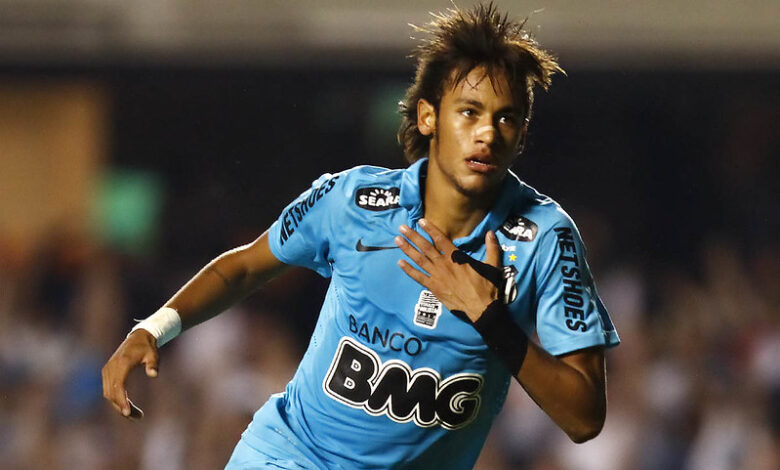
Neymar
Joia revelada na Vila Belmiro, encantou o mundo com sua habilidade.
Robinho
Ídolo moderno, marcou época com dribles desconcertantes e carisma.
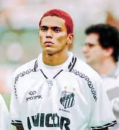
Giovanni
“Messias da Vila”, levou o Santos à final do Brasileirão em 1995 com atuações memoráveis.
Diego
Cérebro do time campeão brasileiro de 2002, talento precoce do meio-campo.
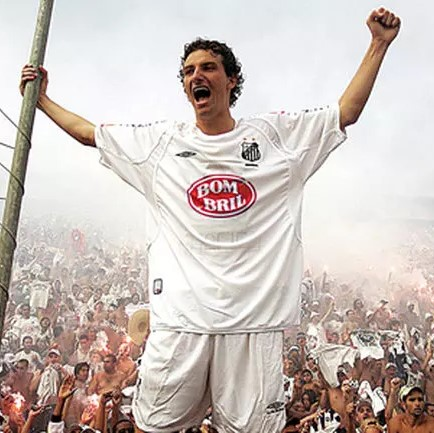
Elano
Volante técnico, líder e símbolo do Santos moderno, com passagens vitoriosas.
Ricardo Oliveira
Artilheiro decisivo e referência técnica, liderou o Santos com gols e experiência.
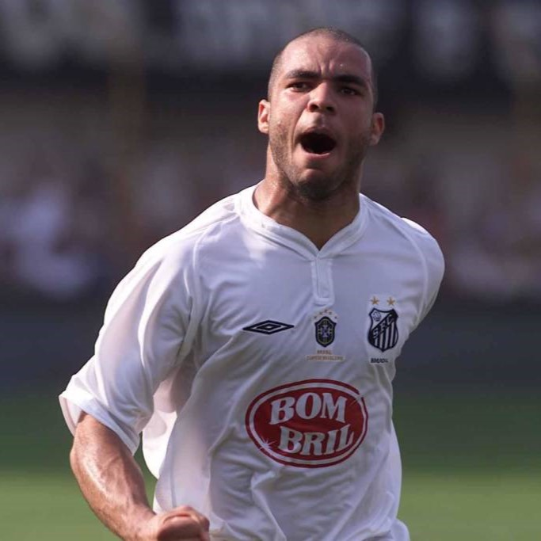
Alex
Capitão e líder da geração de 2002, referência técnica e defensiva.
Paulo Henrique Ganso
Camisa 10 clássico, maestro do time campeão da Libertadores em 2011.
Léo
Lateral esquerdo com alma santista, símbolo de entrega e raça.
Rodrygo
Mais um raio da base, brilhou cedo e encantou antes de ir ao Real Madrid.